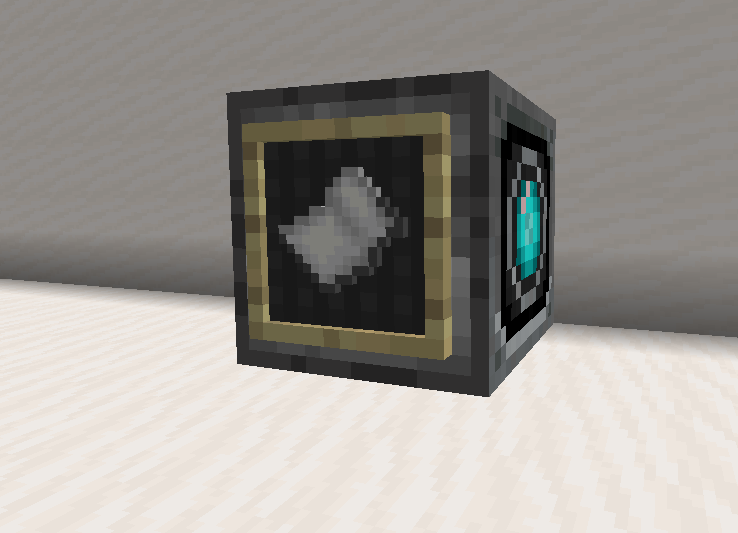
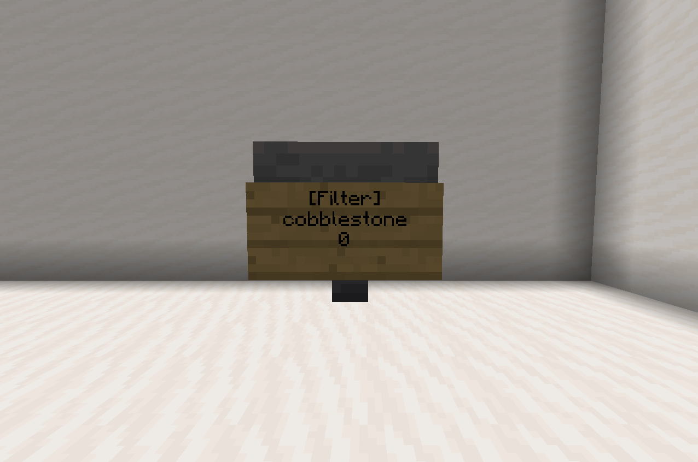
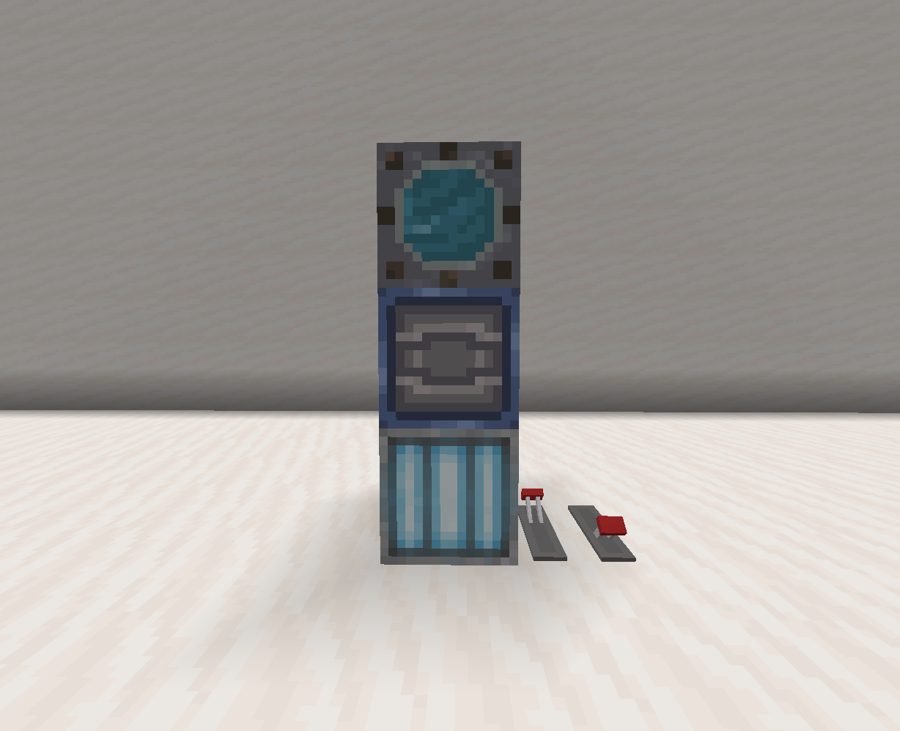
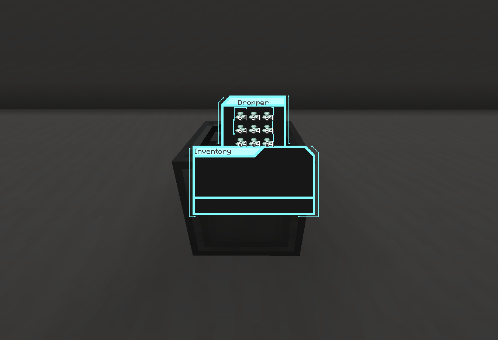

Clockwork crafter
Clockwork crafters automatically craft items when supplied the ingredients, to make one place an item frame on a dropper and put the item you want to be crafted in the item frame.
Once supplied with ingredients, the item will be crafted once every second.
Hopper filter
Hopper filters will stop any item that isn't on the sign from being picked up or moved by the hopper, to whitelist an item right-click the sign while holding it.
To make a hopper filter write
Aero-Electrolysis chamber
Aero-Electrolysis chambers are used in the production of gas canisters, note that gas collection only works on gas giants. (Saturn and Jupiter)
| Electrolysis | |
|---|---|
| Ingredient(s) | Result |
| 1 Water bottle, 3 Empty canisters | 2 Hydrogen canisters, 1 Oxygen canister |
| Gas collection | |
|---|---|
| Ingredient(s) | Result |
| 4 Empty canisters | 2 Hydrogen canisters, 2 Oxygen canisters |
| 2 Empty canisters | 1/25 chance for 2 Neon canisters |
| Required blocks | |
|---|---|
| Electrolysis Tank (custom) | 1 |
| Barrel (output) | |
| Redstone lamp (activation) | |
CryoVault
CryoVaults are a way of setting your spawn on ships so you can still respawn on them if you move the ship, they also replace the usual 'home' system used on similar servers, use
By default, cryoVault '1' will act as your spawn point, to set your spawnpoint to a specific CryoVault just right-click the sign.
| Required blocks | |
|---|---|
| Sign Sign text: |
1 [Cryo] |
| Glass blocks (any) | 6 |
| Redstone lamp/block | 1 |
Optical teleporter
Optical teleporters allow you to quickly teleport to certain points, to connect them use end rods, upon right-clicking the sign you will be instantly teleported to the lodestone.
To turn corners with end rods use pistons, like with resonant cables. Note that it is possible to connect the
| Required blocks | |
|---|---|
| Sign Sign text: |
1 [Optic] |
| Iron block | 1 |
| End rod | 1+ |
| Lodestone (tp point) | 1 |
Mining beam
Mining beams are great for quarrying, when activated they will mine a 3x3 tunnel in the direction they are facing for 68 blocks, they consume 24 resonant crystals per use and cannot mine any block that the player who clicked the sign can't.
| Mineable blocks | |
|---|---|
| Dirt | Gravel |
| Sand | Sandstone |
| Stone | Diorite |
| Granite | Andesite |
| Any ore | Mossy cobblestone |
| Required blocks | |
|---|---|
| Redstone lamp | 1 |
| Redstone block | |
| Furnace | |
| Dropper (Input) | |
| Sign Sign text: |
1 [Mining-Beam] |
Shields
Shields provide protection against ship-to-ship weapons, with different weapon types either doing different amounts of damage, or bypassing them altogether, to make one just put prismarine crystals in a dropper, all blocks in a 15 block radius will be protected.
When a shield takes damage, prismarine crystals are taken from the dropper equal to the amount of damage resisted, once depleted the shield will deactivate and no longer protect the blocks in it's radius.